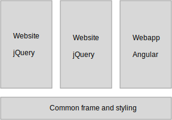
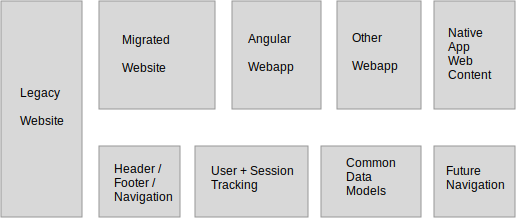
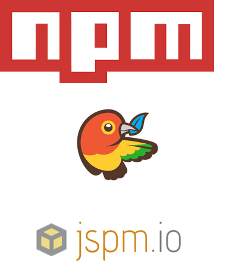

I ran into a problem recently where we have the majority of the customer website implemented with plain jQuery over a number of years, and the newer parts of the website being implemented with Angular to provide a more interactive interface.
Since these two parts have a lot of functionality in common it would make sense to have a shared codebase. The best argument for that is the ability to rapidly adjust and improve the shared parts rather than the idea of cost saving which rarely pans out.
We did make some headway in making the code framework independent, but there is still room for improvement, so I will present what I have found so far and invite your comments and improvements.
The broader topic here is that the amount of JavaScript we put in our websites has grown a lot, and it needs to be managed better as a code base.
Who am I
Henrik Vendelbo - Front-end Web Developer
henrik@ignorethegap.com
Full time AngularJS development for 2.5 years
Focused on high-performance JavaScript for 6 years
In a past life I taught new employees at Microsoft how to develop with Microsoft Dynamics.
Right now I’m working of condensing my experiences into several workshops that aims to,
Make your front-end code longer lived
Have a consistent user experience between Apps and Web
Get designers and developers to collaborate closer
Help Java developers live happily with “all this crazy frontend-stuff”
What Architecture?
Composing Apps + Libs
How to write modules
Core library + Browser base
Developing and Building
Let's not forget
Managing translations and deployment configuration
Good HTML markup use
Sane common CSS
Using Sass/Less the right way
Treat URLs as an API
Modelling data on Client and Server
Caching strategy
Considering npm, bower and jspm
Keeping common vocabulary and approaches
Continuous Testing and Deploy
Composing Apps + Libs
Layers vs Isolated Silos of Apps and Libs

IE8 RIP
Custom tag names allowed
Standard Events
Vary: Accept-Language
Vector Graphics (SVG)
Modern JS
We need a cheat sheet for equivalents to jQuery/Angular APIs
Templated multi line strings `${this.firstName} ${this.lastName}`
$.extend -> Object.create
$q -> Promise
Collections: Map, Set, Weak Map, Weak Set
npm install core-js -> polyfills
Enhanced Standard Lib
We need a cheat sheet for equivalents to jQuery/Angular APIs
jQuery.find -> document.querySelectorAll
.addClass .removeClass -> el.classList
etc. etc.
SystemJS (module management)
lodash - utility functions
Managing Apps and Libs

Model-View Viewmodel (MVVM)
Framework independent approach
How to write Modules
Work in progress
import * as $ from 'jquery';
import * as angular from 'angular';
export {Header,Footer};
jQuery plugins
Most plugins are tightly coupled, but we can invert the dependency.
Good example of boilerplate being problematic for maintenance. The more the more
the more dependencies you have. If you have a calling framework the the boilerplate
you can switch the calling framework.
The toolbox
Writing code should be so hard, the toolbox:
Angular 1 cheat sheet
jQuery cheat sheet
Standard Lib cheat sheet
CLI for managing libs and apps
ESnext build chain
2 day Workshop in February
Hands on working through old/new code styles for jQuery and Angular.